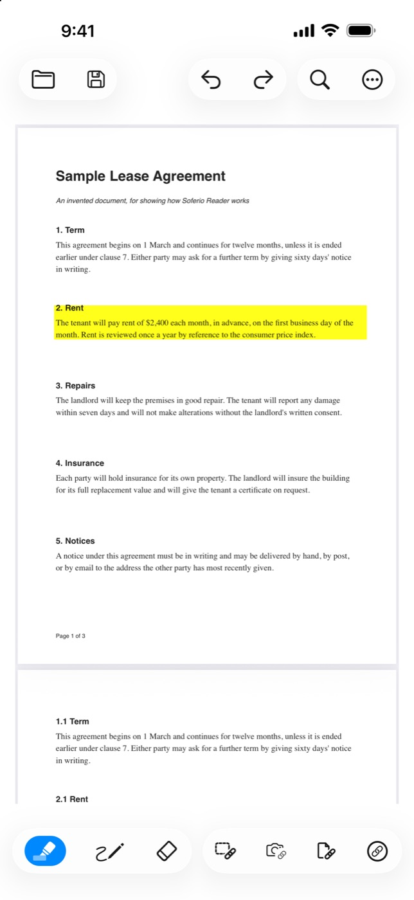
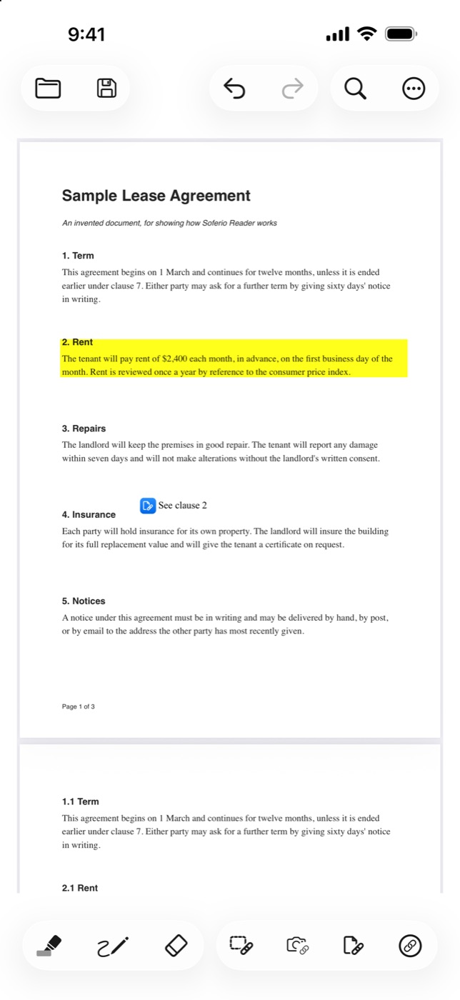
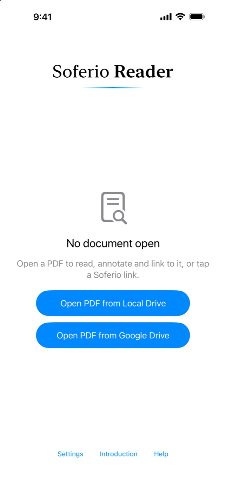
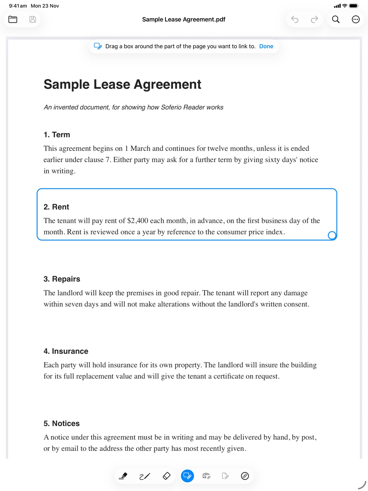
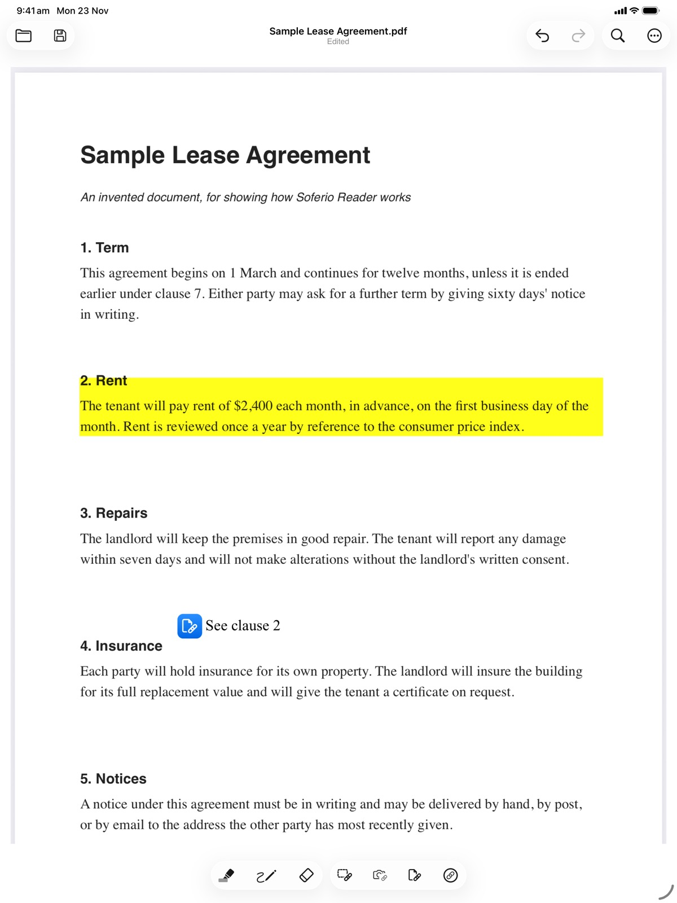

How it works
No more “see page 47, about halfway down”.
A link that remembers the page and the place on it, and takes you straight back.
1. Get Link Drag a box around any part of a page.
2. Paste it anywhere Notes, email, a task, another PDF.
Lease review
Check the rent review clause before the meeting:
Lease.pdf, page 2Also ask about the insurance certificate.
3. Click to come back It opens at the page, and the spot flashes.
Draw a box
Choose Get Link and drag around a paragraph, a table, a figure or a single line. The link is copied at once.
Keep it where you work
Paste it into your notes, an email, a to-do list or a chat. Or place it inside another PDF, so one document points into the next.
Land right on it
Click the link and the PDF opens, scrolls to the page and flashes the area in orange. Back takes you to where you were.
Google Drive
One link. Every device.
Open a PDF from Google Drive and the links you make to it work on your Mac, iPhone and iPad. They keep working when the file is moved or renamed in Drive.
- Sign in and choose files on Google’s own pages. Soferio Reader sees only the files you pick.
- Save sends your changes back to Google Drive, and warns you if the file changed elsewhere.
- Copies on your device are removed when the app closes.
- On iPhone and iPad, links are made to Google Drive files, so they open everywhere.
Made for every screen
At home on iPhone, iPad and Mac.
The same tools everywhere: read, highlight, draw, search and link.





And everything a reader needs
Built for people who live in documents.
Highlight and draw
Four colours for the pen and highlighter, and an eraser. Your marks are saved into the PDF, so other apps show them too.
Search
Find every match in a document and step through them, on any device.
Text recognition
Turn a scanned document into one you can search and select. It is done on your device.
Links inside PDFs
Place a link in one PDF that opens another at the right spot, or make an image link to paste into Word or Pages.
Back and Forward
Follow a chain of links, then step back through every place you visited, even into the file you started in.
Menus and shortcuts
Every tool is in a menu with a keyboard shortcut, on the Mac and on an iPad with a keyboard.
Private by design
Your documents stay yours.
No account with us, no advertising, no analytics and no tracking. Your PDFs stay on your device and, only if you choose, in your own Google Drive.
Free and Pro
Start free. Go Pro when you need it.
Soferio Reader is free for documents of up to 100 pages. Soferio Reader Pro removes the limit.